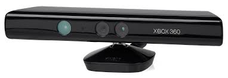
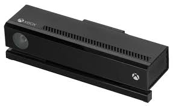
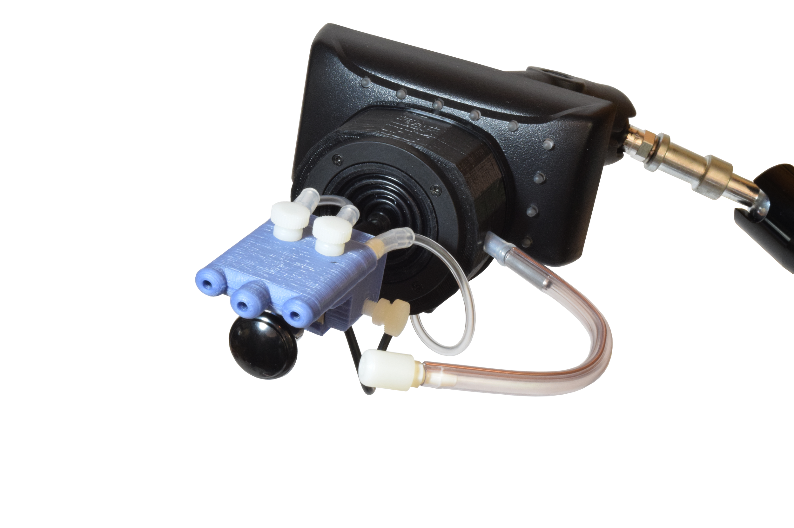
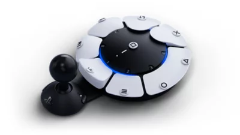
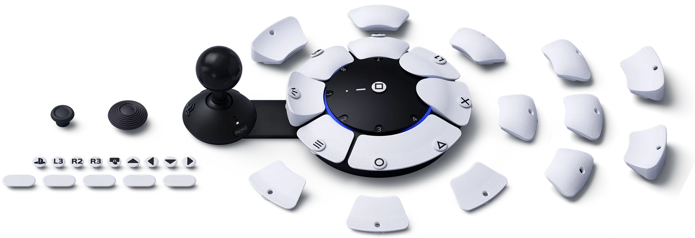

¿En que consiste?
El Xbox Adaptive Controller lanzado en septiembre de 2018, es un dispositivo diseñado por Microsoft para jugadores con discapacidades motoras que no pueden utilizar mandos tradicionales. Su diseño modular y altamente personalizable lo convierte en una herramienta esencial para mejorar la accesibilidad en videojuegos. A diferencia de los mandos convencionales, el Adaptive Controller cuenta con dos grandes botones táctiles y una fila de 19 puertos de 3.5 mm en la parte posterior, permitiendo conectar una amplia gama de dispositivos externos, como joysticks, interruptores y botones auxiliares, que se pueden asignar a las funciones de un mando Xbox tradicional.
Este controlador fue creado en colaboración con organizaciones expertas en la accesibilidad como AbleGamers y SpecialEffect, lo que garantiza que su diseño responda a las necesidades prácticas de los jugadores con discapacidades. Además, mediante la aplicación Xbox Accessories, los usuarios pueden reasignar funciones a cada botón y ajustar la sensibilidad de los controles para crear una experiencia personalizada en Xbox Series X/S, Xbox One y PC con Windows. También se pueden conectar hasta dos sticks analógicos externos a través de puertos USB, lo que permite una configuración más específica para aquellos que necesitan diferentes formas de interactuar con el juego
Una de las principales ventajas del Xbox Adaptive Controller es su compatibilidad con una gran variedad de dispositivos de terceros, lo que le permite adaptarse a una amplia gama de discapacidades. Además, es posible integrarlo con otros controladores, permitiendo configuraciones cooperativas en las que un segundo jugador puede ayudar a manejar ciertos aspectos del juego. Esta flexibilidad es fundamental para jugadores con discapacidades más severas, que pueden necesitar asistencia en ciertas áreas mientras mantienen control sobre otras.
Aunque se enfoca en un nicho específico, el Adaptive Controller ha sido ampliamente elogiado por su impacto en la inclusión, permitiendo que más jugadores con discapacidades motoras disfruten de videojuegos de manera significativa.
El Xbox Adaptive Controller ha establecido un nuevo estándar en la accesibilidad dentro de los videojuegos, ofreciendo una solución versátil, personalizable y económicamente accesible para jugadores con discapacidades. Con su diseño innovador y su capacidad de adaptación, ha abierto nuevas oportunidades de juego para aquellos que antes no podían participar en la comunidad de jugadores.
Antes del lanzamiento del Xbox Adaptive Controller en 2018, los jugadores con discapacidades motoras enfrentaban importantes barreras para disfrutar de los videojuegos. Las soluciones de accesibilidad solían ser dispositivos hechos a medida o adaptaciones caseras, que aunque efectivas en algunos casos, resultaban costosas, complicadas y requerían ayuda técnica especializada. Para muchos, especialmente aquellos con discapacidades severas, la experiencia de juego seguía siendo limitada y poco accesible.
El Xbox Adaptive Controller cambió esta situación al ofrecer una solución modular, accesible y asequible. Permite la conexión de múltiples dispositivos externos como switches, botones y joysticks, eliminando la necesidad de configuraciones complejas y personalizadas. Además, la posibilidad de reasignar funciones a través del software de Xbox Accessories proporcionó un control total, permitiendo a los jugadores personalizar su experiencia sin asistencia externa. Este enfoque universal y adaptable mejora las soluciones previas y se ajusta a una amplia variedad de discapacidades, haciéndolo mucho más inclusivo.

Comparación con otros dispositivos similares
Xbox Kinect (2010)
El Kinect es un dispositivo creado para la Xbox 360 que funciona como un controlador sin necesidad de contacto físico, utilizando una interfaz natural de usuario. Anunciado por primera vez en 2009 y equipado con una cámara RGB, sensores de profundidad, una matriz de micrófonos y software patentado, era capaz de reconocer el cuerpo completo en 3D, identificar rostros y voces. Su versión posterior, el Kinect 2.0, lanzada en 2013 con la siguiente generación de Xbox, no tuvo la misma acogida que su predecesor. Mientras que el primer Kinect logró un éxito relativo, vendiendo 35 millones de unidades, el Kinect 2.0 no logró el mismo nivel de ventas ni impacto en el mercado.
En contraste, su competidor directo, el PlayStation Move, que se mantuvo en el mercado durante un tiempo similar, apenas alcanzó los 15 millones de unidades vendidas, debido a su inferioridad tecnológica frente al Kinect. Sin embargo, Sony supo darle un nuevo uso al Move dentro del mundo de la realidad virtual (VR) con la introducción del PlayStation VR, lo que extendió su utilidad en esa área.
Como dato extra esta tecnología fue aprovechada posteriormente por Microsoft para el desarrollo de Azure Kinect, lanzado en 2020 y descontinuado en 2023, aunque este dispositivo se centró en la logística y la robótica.
Hay que remarcar que ni este dispositivo, ni los comparados, fueron no diseñados en torno a personas con dificultades para la movilidad, sin embargo, sus tecnologías fueron especialmente útiles en campos como la rehabilitación y terapias físicas, estimulación cognitiva o mejoras en la coordinación motora, lo que los hace relevantes en el ámbito de la accesibilidad.


QuadStick (2014)
El QuadStick es un dispositivo desarrollado para personas con discapacidades motoras severas, diseñado como un controlador especializado que permite jugar videojuegos utilizando únicamente la boca. Anunciado por primera vez en 2014, el QuadStick está equipado con un joystick operable con la boca, sensores de presión y botones de succión/soplido, lo que permite al usuario interactuar con videojuegos y otros dispositivos sin el uso de las manos. Además, el QuadStick se conecta a una amplia variedad de plataformas, incluyendo consolas de videojuegos, PC y smartphones, gracias a su compatibilidad con estándares como el HID (Human Interface Device).
El dispositivo ha sido muy bien recibido dentro de la comunidad de jugadores con discapacidades, especialmente por su capacidad de proporcionar una experiencia inclusiva y accesible. Mientras que otros controladores adaptativos se limitan a ciertas funciones o requieren asistencia adicional, el QuadStick ofrece un grado notable de autonomía. Aunque no ha alcanzado un nivel de popularidad masiva debido a su enfoque en un nicho de mercado, su impacto en la calidad de vida de los usuarios que lo necesitan es considerable.
A diferencia de otros dispositivos adaptativos, el QuadStick ha destacado por su capacidad de proporcionar control total sin la necesidad de extremidades superiores, convirtiéndolo en una opción preferida por aquellos con discapacidades motrices más severas.

Access Controller para Play Station 5 (2023)
El Access Controller de PlayStation 5, presentado oficialmente en enero de 2023 y lanzado en diciembre del mismo año, es un dispositivo diseñado específicamente para jugadores con discapacidades motoras. Su estructura modular permite personalizar completamente la disposición de botones y joysticks. Este controlador incluye piezas intercambiables para los joysticks y botones, lo que permite ajustar tanto su posición como su tamaño. Además, cuenta con puertos de 3.5 mm que permiten conectar una variedad de dispositivos externos, como switches o pulsadores, lo que amplía sus opciones de accesibilidad.
El Access Controller puede ser utilizado en combinación con hasta dos controladores adicionales, ya sea otro Access Controller o un mando DualSense, lo que permite crear configuraciones cooperativas en las que un jugador puede controlar diferentes aspectos del juego. Además, su interfaz de software en la PlayStation 5 permite reasignar funciones de los botones, almacenar perfiles personalizados y ajustar la sensibilidad de los controles para que se adapten a las necesidades específicas del jugador.
El controlador fue desarrollado con la colaboración de organizaciones de accesibilidad como AbleGamers y SpecialEffect, garantizando que el diseño responda a las necesidades reales de los jugadores con discapacidades. En comparación con el Xbox Adaptive Controller, el Access Controller de PS5 destaca por su diseño altamente modular, lo que permite ajustes rápidos y sin necesidad de asistencia técnica. Además, es completamente compatible con una amplia gama de dispositivos de terceros, lo que lo convierte en una opción versátil para diferentes tipos de discapacidad.
Si bien no ha tenido una adopción masiva debido a su enfoque en un nicho específico, el Access Controller ha sido aclamado por su capacidad para mejorar la accesibilidad en los videojuegos, brindando a los usuarios con discapacidades motoras una experiencia de juego completamente personalizada y adaptable.

